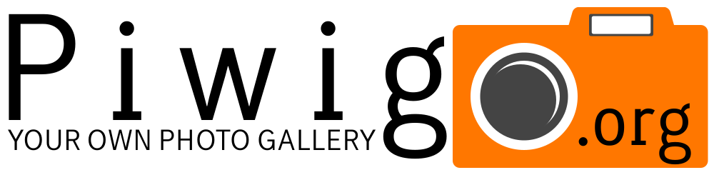

Présentation
Bonjour, je suis Nolwenn WEBER-MARQUISET.
Développeur web et web mobile.
Je développe habituellement en JS et PHP mais pour ce site j'ai décidé de me lancer le challenge de ne faire que du HTML et du CSS, pour un plus grand détail je vous invite à rejoindre la page .
Vous trouverez aussi mon portfolio sous forme de livre de conte à l'adresse suivante :
Les Contes d'un Développeur
Toute les images et logo de ce site sont de ma création, excepté les logos des langages et outils de développement qui ont été récupéré sur Wikimedia Commons.
Projets :
Les Contes d'un Développeur
L'Effet Lune
Aeiou Stream
Site regroupant plusieurs lecteur video pour du streaming.
Les lecteurs sont ceux du github de OvenPlayer.
Seul l'interface multistream est de mon oeuvre.
Le projet étant fait pour être utilisé entre amis, le site ne sera pas révélé.
Galerie Photo
- 
Qui suis-je ?
Nolwenn WEBER-MARQUISET, un développeur aux multiples compétences pour vous servir.
Parcours Professionnel
Passionné par la création en tout genre. Que ce soit artistique, artisanal, ou la programmation,
je me suis naturellement orienté vers cette dernière qui me permet à la fois de laisser libre cours à mon imagination tout en m'offrant des défis et des énigmes des plus excquises.
J'ai développé mon premier site internet un peu avant 2010, bien qu'à cette époque je touchais au développement comme un loisir, PHP, Python étaient des jouet à mes yeux.
J'ai décidé de professionnalisé ce loisir que bien plus tard en 2018 et j'ai obtenu mon premier titre professionnel de développeur web et web mobile en 2019.
Bien que j'ai travaillé pour de multiples entreprises, la seule experience qui mérite d'être citée ici est la suivante :
Depuis 2021 je suis formateur en Développement web et web mobile à l'AFCI. Ce métier m'a apporté de nombreuses connaissances et la mise en place de veilles technologiques effices afin de toujours apporter les meilleurs connaissances à mes stagiaires.
Activités Extra-Professionnelles
J'ai été membre de plusieurs groupes et associations et j'ai participé à l'organisation de nombreux évènements.
L'Association "Japon et Culture"
Cette association à pour but de promouvoir la culture japonaise. Si son commité d'administration est composé de bénévoles français. Les cours de langue et autres qui sont enseignés par cette association sont tenus par des employés d'origine japonaise.
Si j'y ai commencé comme simple membre, cela fait maintenant plusieurs années que j'y agis au titre de vice-trésorier.
L'Association "Les irrécupérables du jeu de rôle"
Association de jeu de rôle et de grandeur nature. J'y ai là aussi commencé en tant que simple membre avant d'en devenir vice-président pour soutenir le président et aider à organiser les évènements.
Je me suis occupé de la relation avec les marchands qui venaient sur nos évènements (entre 30 et 50 marchands par évènements) ainsi que de leurs placement.
J'ai fini par laisser ma place de vice-président en 2023 à quelqu'un de plus interessé par cette place, puis en 2024 j'ai laissé ma place à l'organisation des évènements afin d'avoir plus de temps à accorder à la programmation.
Inspirations
Pour avoir une idée de ce que je peux avoir en tête, voici les personnes célèbres qui m'inspirent le plus chacun à leur façon :
- Terry Pratchett
- Masahiro Sakurai (桜井 政博)
- Benoît Theveny
Mes Compétences :
HTML
HTML, la base de tout site, j'ai appris à m'en servir il y a plus de 15 ans et je continue toujours d'apprendre.
Cliquez sur une des icones pour plus d'information.
CSS
Je possède de bien meilleurs qualités que le design. Cela dit, donnez moi n'importe quelle maquette et je vous la reproduirais sans problème.
SASS
Il apporte des outils si pratique que plus d'un furent et continue d'être intégré à CSS.
Vive le nesting.
Javascript
Pour beaucoup de développeur, une des premières rencontres avec les algorithmes (la mienne fut en Python).
Indispensable pour bien des sites, que ce soit en procedural ou en POO, je vous coderais ce que vous souhaitez.
JQuery
Ce vieil ami à mes débuts en Javascript n'est plus aussi populaire qu'il le fut. Bien que j'ai aussi choisi de ne plus l'utiliser, il est pratique de le connaître car on le croise encore souvent en exemple ou sur d'ancien sites ayant besoin d'une mise à jour.
Typescript
Quand javascript devient trop brouillon pour un gros projet, l'ami Typescript vient à la rescousse, apportant ce qu'il manque à javascript pour devenir un langage serieux.
Angular
De tous les frameworks et libraries que j'ai pu testé pour la création de SPA, Angular est celle qui me convient le mieux.
Sûrement grâce à son code orienté objet et les atouts de Typescript.
MySQL
En vrai, MariaDB. Quoi qu'il en soit si il a pu m'arriver d'utiliser d'autres bases de données comme du NoSQL avec MongoDB, j'en reviens toujours à la structure si pratique du SQL.
J'aime que les choses soient claires et bien triées.
PHP
En perte de popularité, peut être mais toujours le roi du web. La majorité des sites tournent grâce à lui. Si je peux m'aventurer parfois sur d'autres voies avec plaisir, comme celle de NodeJS ou de Python;
Lorsque je veux un projet solide, ma maison est celle de PHP.
Symfony
Sécurisé, complet, peut être un peu lourd, cela reste quand même bien pratique de pouvoir réaliser pages, routes, formulaires et multiples autres tâches répétitives rapidement pour se concentrer sur le coeur du projet.
Me Contacter :
Ce site se voulant uniquement en HTML et CSS, pas de formulaire de contact.
J'ajouterais d'autres façons de me contacter par la suite,
mais pour l'instant je vous invite à me contacter sur Linkedin.

Bonus :
Revenez plus tard et des secrets apparaîtrons ici.